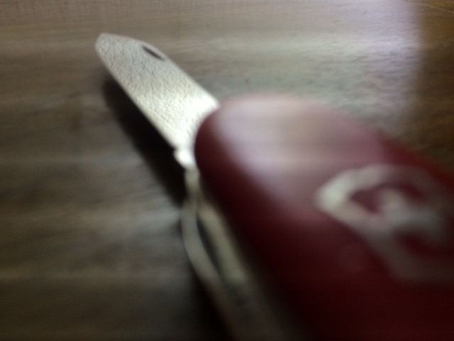

This is my pocket knife
Where I got my knife
More than 20 years ago, while I was in college, my mom and my sister mailed me a gift package for my birthday. In the bottom of the box was another small box. Inside the small box was a red pocket knife. It was a Super Tinker model Swiss Army Knife by Victorinox. I still have that knife today, and except for a little cosmetic wear, it's as good as new.
History of the Swiss Army Knife
According to the article on Wikipedia, Victorinox has been making Swiss Army Knives for the Swiss Army since 1891. According to the Wikipedia article, the gun carried by the Swiss Army needed a screwdriver for disassembly. For most of their history, they competed with another knife company, and shared the contract to produce knives for the army. The other company was called Wenger, but was absorbed by Victorinox 2005. Both companies have long sold versions of their knives to the public, but I have always preferred Victorinox.
The Super Tinker
 The Super Tinker is a good pocket knife that fits my everyday needs well. It contains the following tools:
The Super Tinker is a good pocket knife that fits my everyday needs well. It contains the following tools:
- Large knife
- Small knife
- Can opener
- Small screwdriver
- Bottle opener
- Flat screwdriver
- Scissors
- Reamer
- Parcel hook
- Phillips screwdriver
What I use my knife for
I like to carry my knife with me. It comes in handy at the most unlikely of times. However there are certain things that are just easier and more convenient when you have the right tool. For example, I like to use my knife to cut up an apple or a piece of cheese with lunch. And modern plastic packaging for food or small electronic gizmos can be frustratingly hard to open if you don't happen to have a knife or a pair of scissors. The small blade makes an excellent tool for opening letters.
MacGyver
 MacGyver was a television show from the 1980s. The hero, MacGyver, was a sort of tinkering genius with a proclivity for escaping from dire predicaments using his wits, duct tape, and his Swiss Army Knife. I'm sure he was responsible for igniting a resurgence of interest in this handy tool amongst the boys who watched the show. Since my version of the knife has a phillips screwdriver instead of a corkscrew, I'll never know if I could save my life by using the corscrew to drill the knife into a wooden board, allowing me to use the knife as a handhold to pull myself up, preventing me from plunging to my doom in a pit of molten lava... but it totally sounds legit. Also, I could use my knife to cut my way out of the tent were the rebels are holding me captive. Or use the reamer to pick a lock. You know, standard stuff.